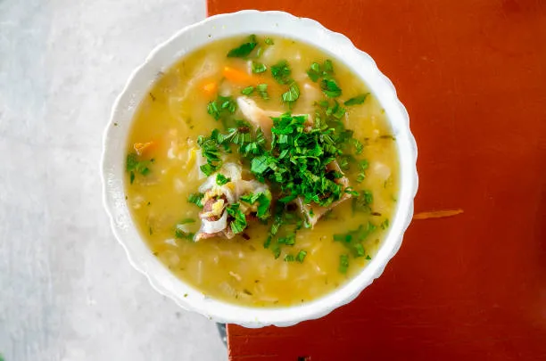
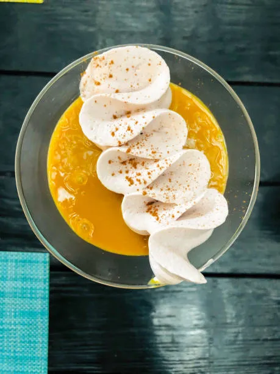
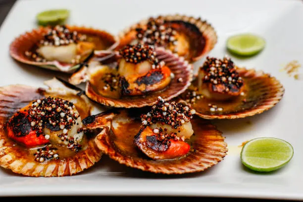
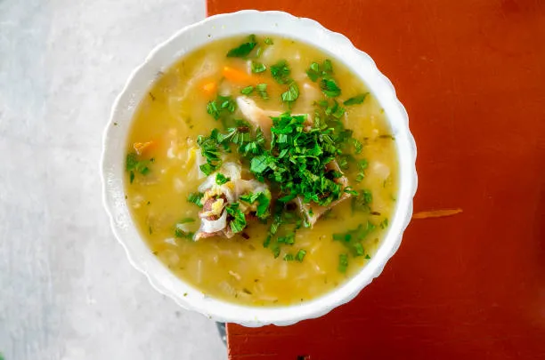
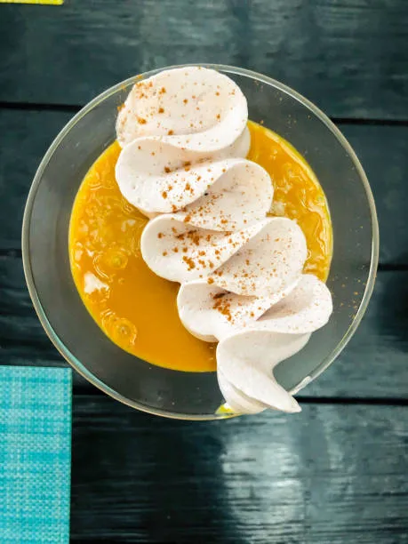
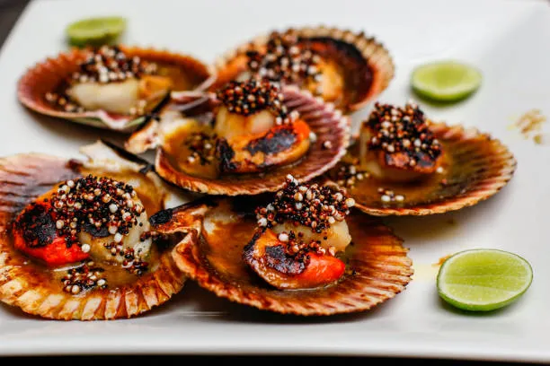

Machu Picchu

Perched at 2,430 meters above sea level in the heart of a tropical mountain forest, Machu Picchu stands as the most spectacular tangible legacy of the Inca Empire. This 15th-century citadel, often referred to as the "Lost City of the Incas," is a UNESCO World Heritage site and one of the New Seven Wonders of the World.
Whether you arrive via the historic Inca Trail or by the scenic Vistadome train, witnessing the sunrise over these ancient ruins is a life-changing experience that transcends time.
A Sacred Connection Functioning as both a royal estate and a religious sanctuary, the city is divided into agricultural and urban sectors. Its most sacred points, like the Temple of the Sun and the Intihuatana stone, were designed to track astronomical events such as solstices,


 




